- / -
EMSC3025/6025: Remote Sensing of Water Resources
Dr. Sia Ghelichkhan
- / -
Precipitation
EMSC3025/6025
Dr. Sia Ghelichkhan
Objectives
Introduce the role of precipitation in the hydrological cycle.
Understand how precipitation forms in the atmosphere.
Explore factors controlling the amount and distribution of precipitation.
Examine how vegetation interacts with and modifies precipitation.
Review methods for measuring and estimating precipitation.
Fig. 1 → From scijinks.gov
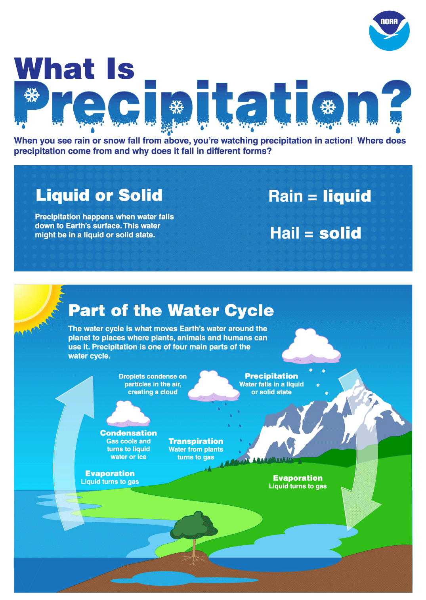
Precipitation
The release of water from the atmosphere to reach the surface of the Earth.
- Covers all forms of water: snow, hail, sleet, and rainfall.
- The ability of air to hold water vapour is temperature dependent.
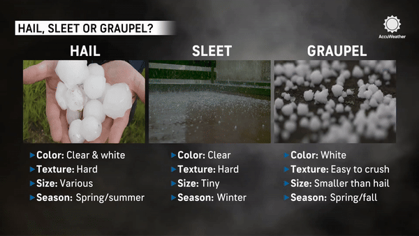
Understanding the Atmosphere
Before we can understand precipitation, we need to understand the atmosphere, or more specifically:
What causes the air to cool?
Composition of the Atmosphere
Let’s understand pressure and temperature relationships first.
- Atmosphere around us is a mixture of gases
- Nitrogen and oxygen make up 99% of the atmosphere (plus some water vapour)
- Gravity keeps the atmosphere close to the surface, hence the pressure is higher at the surface.
- e.g., at 5500m elevation, the pressure is 50% of the surface pressure.
- Units
[Pa] = \frac{N}{m^{-2}} , but commonly reported in[millibars] or[kPa] - Water vapour accounts for
< 0.3 \% of the atmospheric pressure.
pie showData
"Nitrogen" : 78
"Oxygen" : 21
"Other gasses, including water vapour" : 1Cooling of the atmosphere
- Moist Air = Water vapour + Dry air
- The maximum amount of vapour that air can hold depends on the temperature.
- Clausius-Clapeyron equation describes the relationship between temperature and vapour pressure.
- Figure 2 →
Saturation vapour pressure curve representing absolute humidity for a given dew point temperature. Note that the saturation vapour pressure curve over ice is lower.
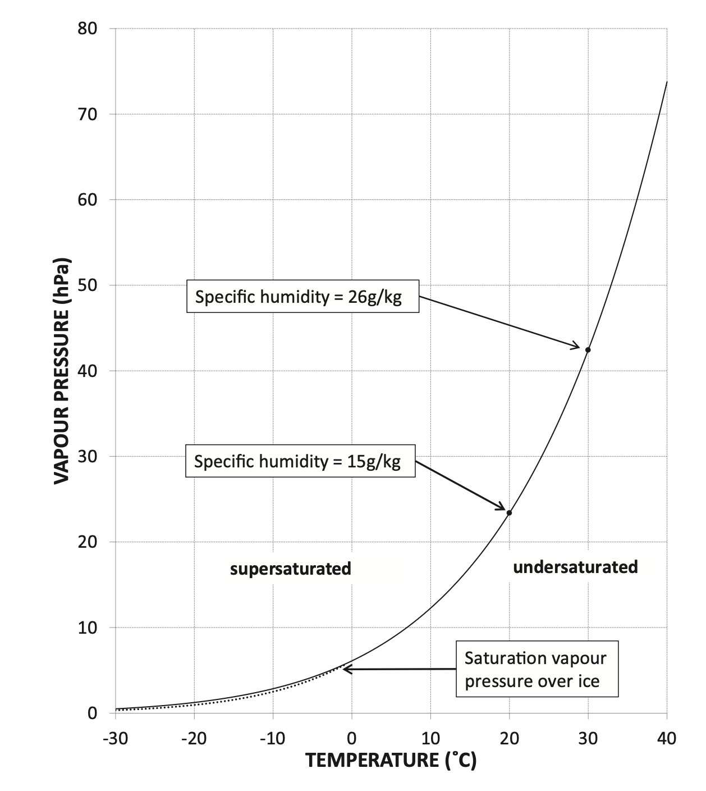
Cooling of the atmosphere
- Vapour pressure
e(T) , cannot exceed saturated vapour pressuree_{sat} . e_{sat} represent absolute humidity, the point where vapour turns into liquid.- For this reason it is also known as the dew point temperature / Frost point temperature
- We could also have super-saturated air, where the vapour pressure is higher than the saturated vapour pressure (maximum 1 or 2%).
- The dotted line represents the saturation vapour pressure curve over ice.
- Easier to escape from the liquid phase to the vapour phase compared to the solid phase.
- Subzero temperatures: where desublimation occurse. (hoarfrost).
Cooling of the atmosphere
- Vapour Pressure is a reflection of the concentration of water vapour molecules in air.
- Specific humidity: mass of water vapour (g) per unit mass of air (kg).
- Temperature increase of 10°C allows air to hold ~11g more water vapour per kg of air.
- Example: At 30°C vs 20°C:
- 30°C: 26 g water vapour per kg air
- 20°C: 15 g water vapour per kg air
Ideal Gas Law
- Ideal Gas Law shows fundamental relationships between pressure, volume, and temperature.
- The ratio between pressure and the product of temperature and density is constant:
where:
P = atmospheric pressure (kPa)T_a = air temperature (K)\rho_a = mass density of air (kg/m³)R_a = gas constant for air
If pressure decreases, the product of temperature and density must also decrease to maintain the constant.
Adiabatic Cooling and Lapse Rates
- Adiabatic cooling: When air moves upward to lower pressure, it expands and cools.
- Cooling occurs due to pressure and density changes, not heat loss.
- Fundamentally important in precipitation formation process.
- Dry Adiabatic Lapse Rate (DALR): ~9.8°C per km for dry air.
- Saturated Adiabatic Lapse Rate (SALR): Slower than DALR due to latent heat release from condensation.
- SALR can be half the DALR - precise value depends on pressure and temperature.
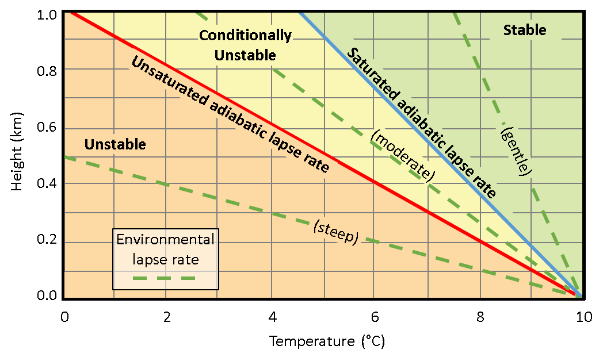
Environmental Lapse Rate
- Environmental Lapse Rate (ELR): Conventional temperature decrease with altitude.
- Related to distance from radiating body (Earth).
- Approximately 6°C per km, but varies.
- Three types of lapse rates:
- DALR: ~9.8°C/km (dry air)
- SALR: ~4-6°C/km (saturated air, varies)
- ELR: ~6°C/km (environmental, varies)
Adiabatic cooling process
Now we understand the atmosphere, but how does precipitation form?
Three physical conditions must be met for precipitation to occur:
- Cooling of the atmosphere
- Condensation onto atmospheric nuclei
- Growth of water/ice droplets large enough to overcome updrafts
- a supply of moisture to continue the process
How do we cool the air?
- Cooling is essential for condensation and precipitation:
- Rising air expands and cools (Boyle’s Law)
- Main causes of uplift:
- Convective: surface heating
- Orographic: air rising over mountains
- Cyclonic: air lifted in low-pressure systems
- Also caused by contact with cooler surfaces or air masses
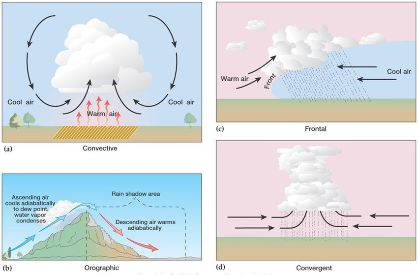
Condensation Nuclei
- Minute particles (1
\mu m ), initiating droplet formation. - surface for vapour to condense into liquid.
- Include dust, smoke, sea salt
- Without them, supersaturation can occur without precipitation
- Forms a basis for cloud seeding (silver iodide, more recently potassium chloride)
- Various forms of cloud seeding: References (Mather et al. 1997)
- Case of a paper mill in South Africa.
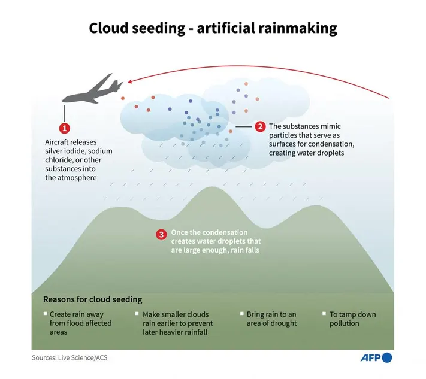
Droplet Growth Processes
- Water/ice droplets need to be large enough for them weight to overcome upward draught (from a cloud).
- They need to grow from
\approx 1\mu m to\approx 3000\mu m .
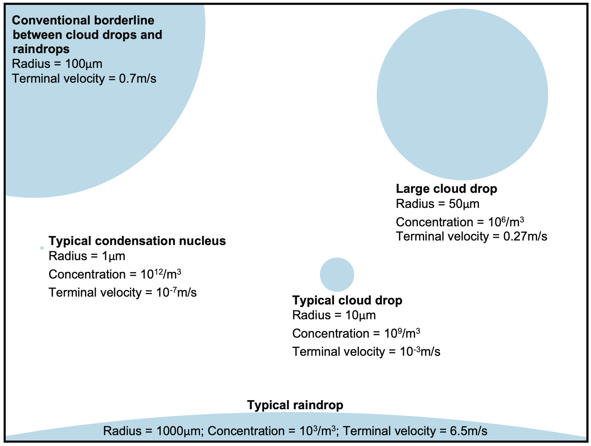
Droplet Growth Processes
- Difference in vapour pressure and water ⇒ vapour adds to droplets (slow)⇒ Condensation on water.
- Difference in pressure with ice bigger ⇒ faster, due to greater vapour gradient Sublimation on ice.
- Main process that raindrops grow: Collision and coalescence, two water-drops collide and join together and they repeat.
- Dominant in warm clouds.
- Droplets collide, merge, and grow large enough to fall.
- Larger droplet fall faster, sweep a larger area and are more likely to collide with other droplets.
- When ice droplets grow by collision, it’s called aggregation.
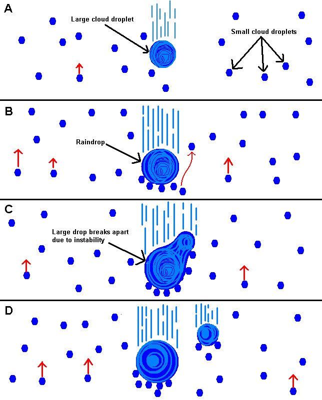
Different types of clouds
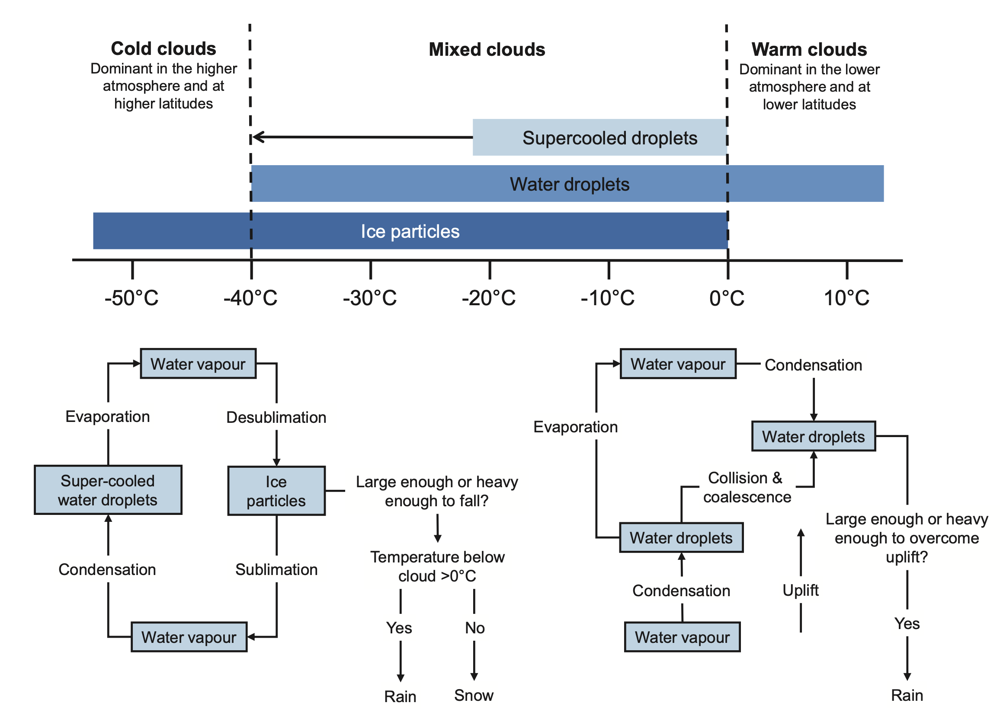
Bergeron Process
- Bergeon-Findeisen Process or cold cloud process.
- At sub zero temperatures, the saturation vapour pressure over ice is lower than over water.
- This means air is saturated for ice but not for water.
- Which means the ice particles can grow at the expense of the water droplets.
- Vapour diffusion: vapour moves from higher pressure (cloud droplets) to lower pressure (ice particles).
- But this results in drier clouds ⇒ cloud droplets evaporate.
- Ice particles attract water vapour efficiently, causing desublimation (direct vapour to ice).
Hail Formation
- Hail stones: typically ~5mm, spherical, sometimes irregular ice particles.
- Size range: golf ball size common, rare cases >15cm diameter recorded.
- Formation location: highest parts of cumulonimbus clouds (storm clouds).
- Process: ice particles circulate in violent up/down draughts.
- Growth mechanism: ice particles collide with supercooled water droplets → immediate freezing.
- Cross-section: alternating layers of clear and translucent ice.
- Clear ice: slower freezing (cloud tops)
- Translucent ice: instant freezing, trapped air
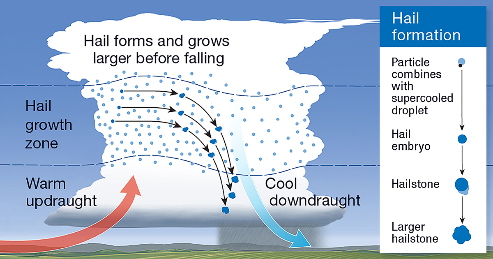
Hail Formation Process
- Circulation: hail stones circulate multiple times in violent draughts.
- Fall mechanism: increasing mass eventually overcomes up draught.
- Melting: if conditions warmer below cloud base → melt and fall as rain.
- Damage potential: serious damage to infrastructure and agriculture.
- Economic impact: US hail storms cause ~$1 billion/year in losses.
- Reference: National Storm Damage Centre
Dewfall
- Condensation of vapour onto cool surfaces:
- Occurs at night when surfaces cool below dew point
- Common in humid-temperate zones (e.g., autumn)
- Forms on grass, leaves, metal, etc.
- Minor in hydrological budget, but relevant to ecology and surface moisture processes
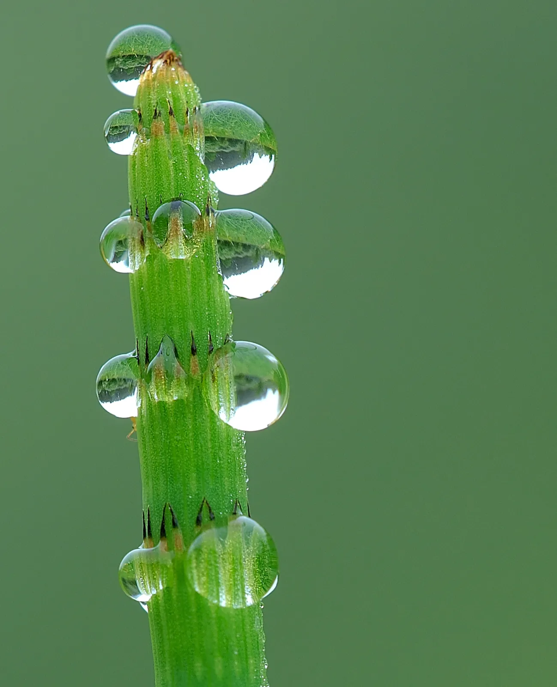
Precipitations and Definitions
| Class | Definition |
|---|---|
| Drizzle | A subset of fine rain with droplets between 0.1 and 0.5 mm, but close together |
| Rain | Liquid water droplets with diameter between 0.5 and 0.7 mm, but smaller if widely scattered |
| Freezing rain or drizzle | Rain or drizzle, the drops of which freeze on impact with a solid surface. Also called sleet in the USA |
| Sleet | Partly melted snowflakes, or rain and snow falling together (UK). Fairly transparent grains or pellets of ice (USA) |
| Ice crystals, ice prisms, snow and snowflakes | Snow can fall as single branched hexagonal or star-like ice crystals, or in the case of ice prisms, as unbranched ice crystals in the form of hexagonal needles, columns or plates. The nature of the crystal depends on the temperature at which it forms and the corresponding amount of water vapour. More often snow falls as agglomerated snowflakes. |
| Snow grains | Very small, white, opaque grains of ice, flat or elongated, with diameter generally <1 mm. Also called granular snow |
| Snow pellets | White, opaque grains of spherical or conical ice (2–5 mm). Also called granular snow, or graupel |
| Ice pellets | Transparent or translucent pellets of ice, spherical or irregular with diameter <5 mm |
| Hail | Balls or pieces of ice usually between 5 and 125 mm in diameter, commonly showing alternating concentric layers of clear and opaque ice in cross-section |
Understanding spatial distribution
We understood the process, but we need to understand how precipitation is distributed mostly in space
Precipitation Distribution
Precipitation varies across both space and time:
- Spatial variation: different locations receive different amounts.
- Temporal variation: amount of rainfall changes over time at the same location.
Influences on precipitation fall into two categories:
- Static influences: do not change from storm to storm (e.g. altitude, aspect, slope)
- Dynamic influences: change with weather conditions (e.g. air masses, storm tracks)
Higher rainfall in the north-west states (Oregon and Washington) due to linked to wetter cyclonic weather systems from the northern Pacific. Higher rainfall in Florida and other southern states is linked to the warm waters of the Caribbean sea
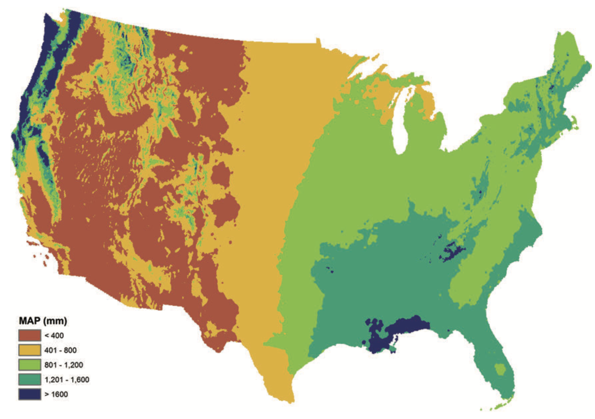
Static Influences on Precipitation
flowchart LR
A([Precipitation]) --> B([Dynamic Controls])
A --> C([Static Controls])
C --> D([Altitude])
C --> E([Aspect])
C --> F([Slope])
classDef bigText font-size:28px;
class A,B,C,D,E,F bigTextStatic influences are fixed features of the landscape:
- Altitude: Modulating temperature. Higher elevations receive more rainfall due to cooling of rising air (orographic effect)
- Aspect: Less important than altitude. Slopes facing prevailing winds often receive more precipitation.
- Humid mid-latitudes (35-65
\degree ): cyclonic weather systems coming from W. So slopes facing east will be more sheltered.
- Humid mid-latitudes (35-65
- Slope: Only important at very small scale — i.e., the difference between a level gauge and one on a slope.
Case Study: The rain shadow effect
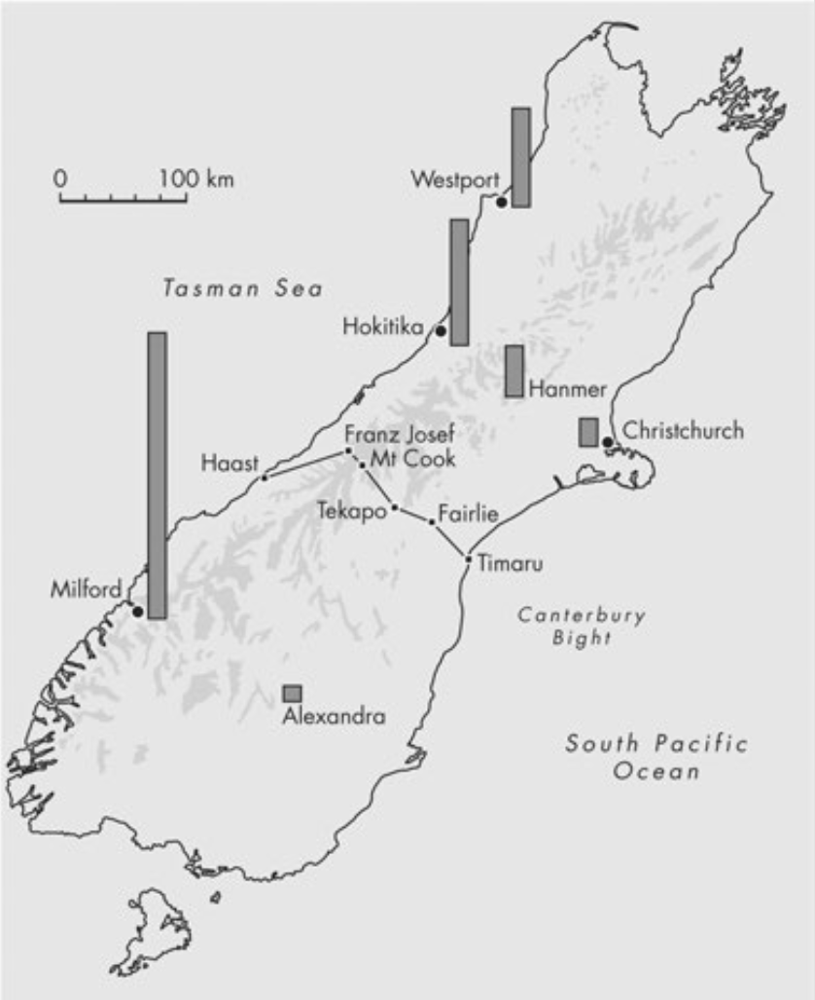
Predominant weather pattern for the South Island of New Zealand is a series of rain-bearing depressions sweeping up from the Southern Ocean, interrupted by drier blocking anticyclones.
Weather pattern: westerly airflow, bringing moist air from the Tasman Sea.
One the west side, mostly rain. On the eastern side: föhn (locally as nor-wester).
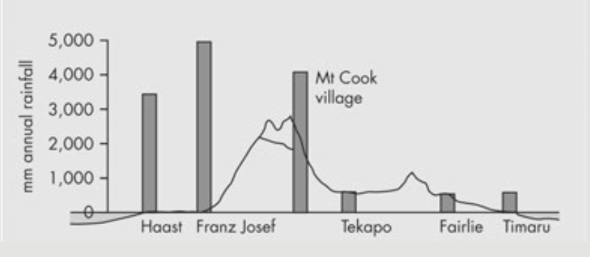
Rainfall distribution across the Southern Alps of New Zealand (South Island). Shaded areas on the map are greater than 1,500 m in elevation. A clear rain shadow effect can be seen between the much wetter west coast and the drier east
Case Study: The rain shadow effect in Mareeba
Case Study: The rain shadow effect in Mareeba
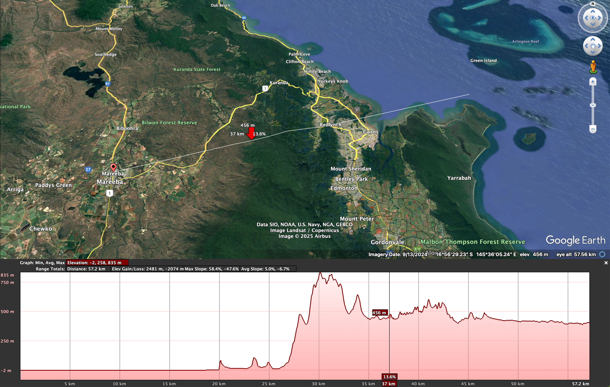
Dynamic Influences on Precipitation
Dynamic influences result from atmospheric processes (climatic controls) that vary with time:
Storm tracks: paths of cyclones and weather systems
Frontal systems: interactions between warm and cold air masses
Moisture availability: seasonal shifts in humidity sources (e.g. monsoons)
Convective activity: varies by temperature and surface conditions
At the global scale, dynamic factors dominate:
- Climate zones
- Atmospheric circulation (e.g. ITCZ, subtropical highs)
At the continental scale, both static and dynamic factors matter:
- Mountain ranges cause rain shadow effects
- Seasonal wind and temperature patterns affect rainfall distribution
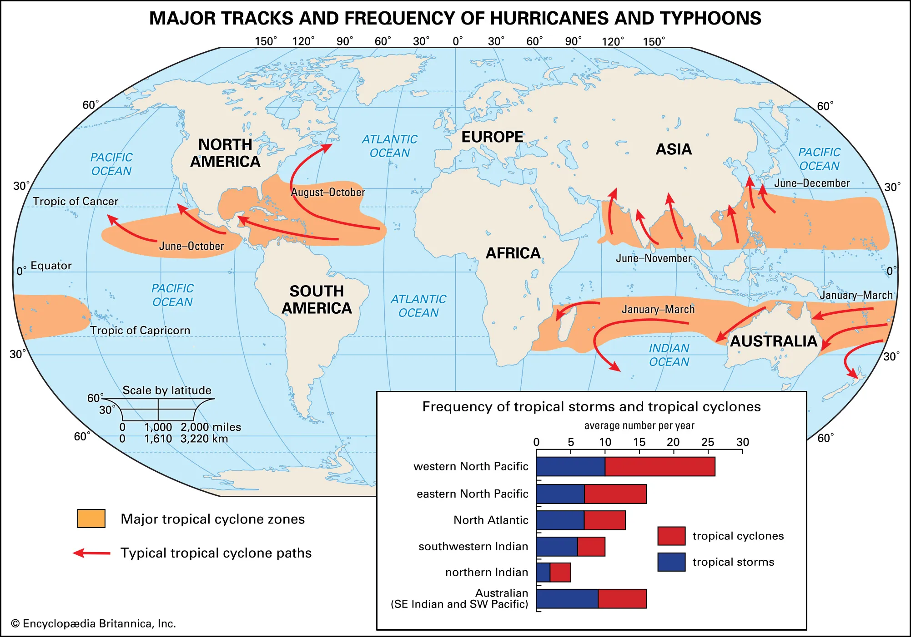
Measurement of Precipitation
How do we measure precipitation?
Measurement of Precipitation
Measured as a vertical depth of water (e.g. mm or inches).
Represents the depth that would accumulate if all water remained on the surface.
Used for both rain and snow:
- Snow is often reported as water equivalent.
- Recognizes that snow can occupy up to 90% more volume than liquid water.
Due to spatial variability, there’s a strong argument that catchment-scale precipitation cannot be “measured.”
Thus, all precipitation “measurement” techniques are effectively estimation techniques.
For clarity in this course:
- Measurement: quantifies actual water collected.
- Estimation: uses surrogate variables (e.g., radar, satellite).
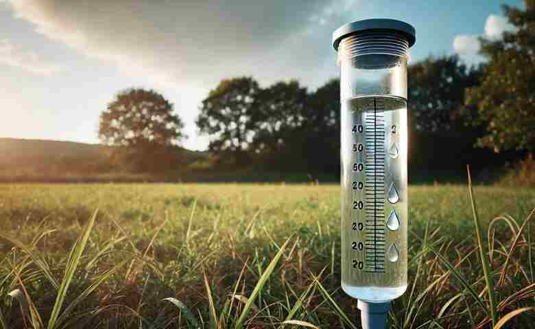
Rainfall Measurement with Gauges
- Rain gauge: collects rainfall over a defined area, measures volume.
- Volume is divided by the area to get depth.
- Simple in concept — but prone to multiple sources of error.
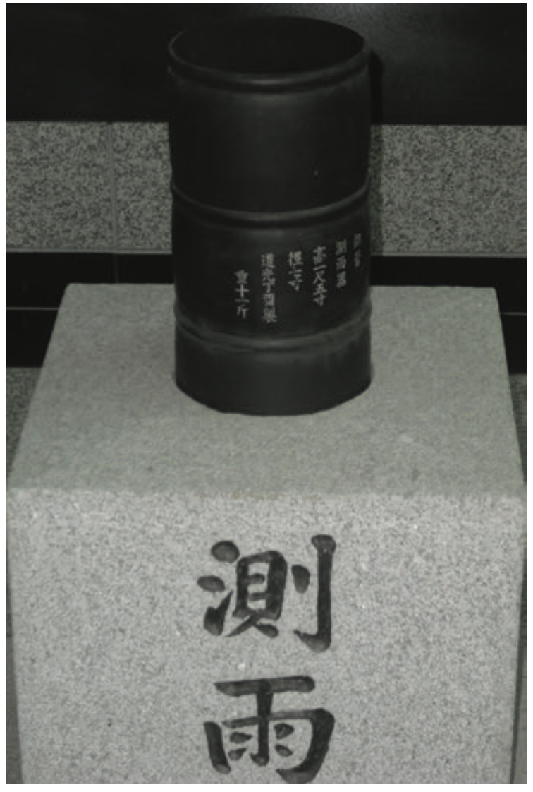
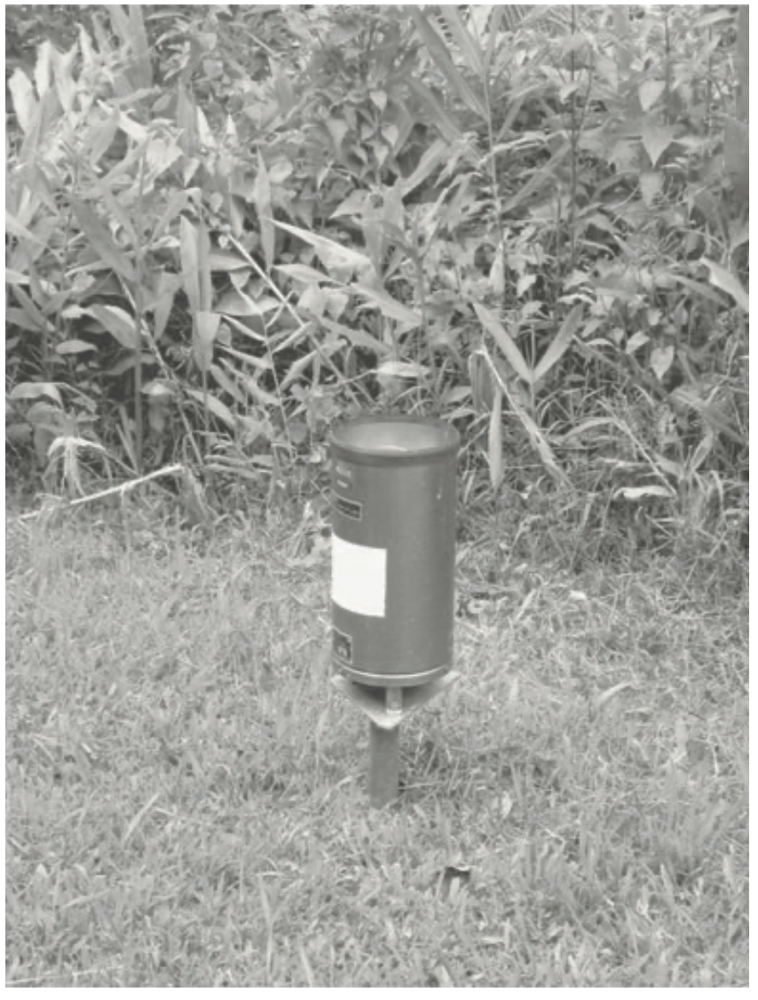
Errors in Rainfall Measurement
flowchart TB
A([Rainfall Measurement Errors]) --> B([Evaporation])
A([Rainfall Measurement Errors]) --> C([Wetting])
A([Rainfall Measurement Errors]) --> D([Rain Splash])
A([Rainfall Measurement Errors]) --> E([Turbulence])
classDef bigText font-size:28px;
class A,B,C,D,E,F bigTextFour major sources of error:
- Evaporation: water lost before being measured.
- Wetting: water adheres to funnel walls.
- Rain splash: water splashes into or out of the gauge.
- Turbulence: wind distorts drop paths, reduces catch.
Evaporation Loss
- Funnel-shaped design channels water to a narrow opening.
- Reduces air mixing and exposure to sunlight.
- Minimizes evaporative losses by:
- Preventing warm air exchange
- Shading the collected water
- Evaporation is limited if turbulence is reduced (more in Chapter 3).
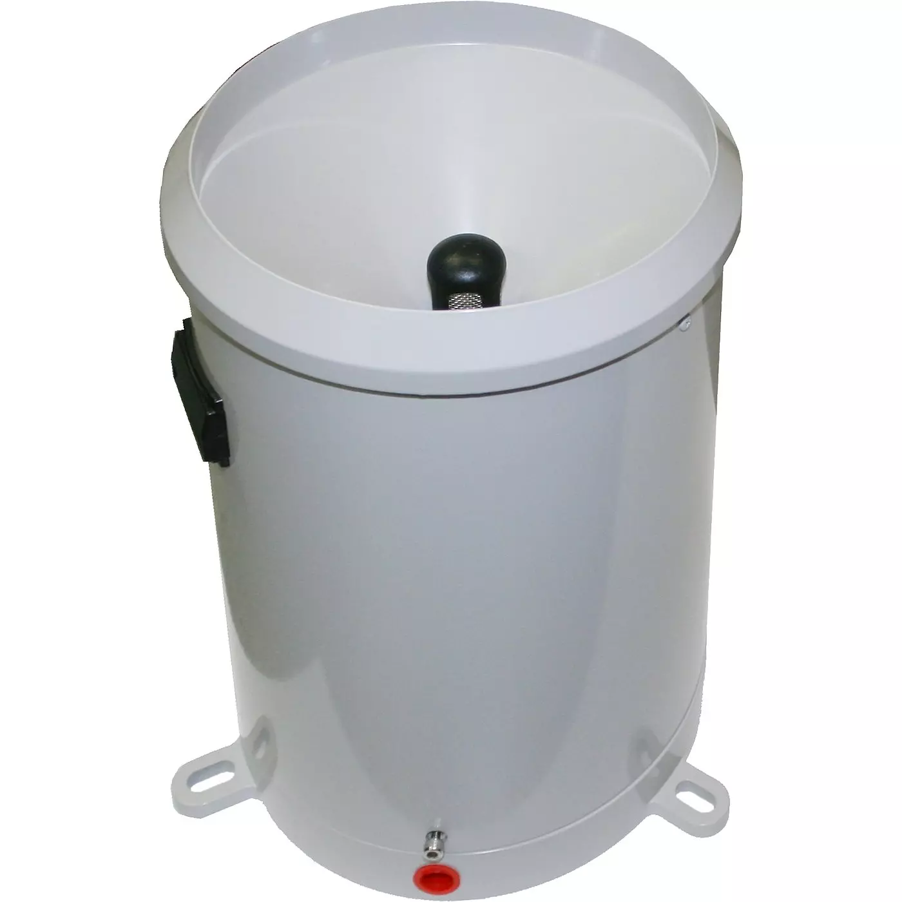
Wetting Loss
- Water clings to funnel walls and may not reach the collector.
- Losses are usually small, but significant during:
- Light showers
- Warm days
- Solutions:
- Steep funnel sides
- Non-stick surfaces (e.g., copper or non-adhesive plastics)
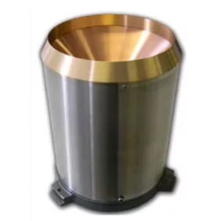
Rain Splash
- Ideal gauge would sit flush with the ground — but this increases splash-in.
- Funnel design prevents splash-out, creating a net over-measurement.
- Surface-level gauges may flood or be covered by snow.
- Raised gauges or non-splash surrounds are preferred.
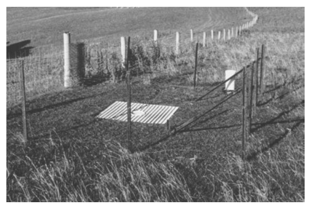
Wind Turbulence and Gauge Height
- Raised gauges reduce splash, but disrupt airflow.
- Wind creates turbulent eddies, leading to under-catch.
- Loss increases with:
- Wind speed: At 20 km/h: up to 20% loss, at 90 km/h: up to 40% loss
- Drop size
- Solution: fit gauge with a wind shield (e.g. baffles or slats).
- Shields reduce wind speed around the orifice.
- Can significantly improve measurement accuracy.
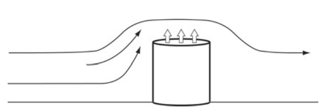
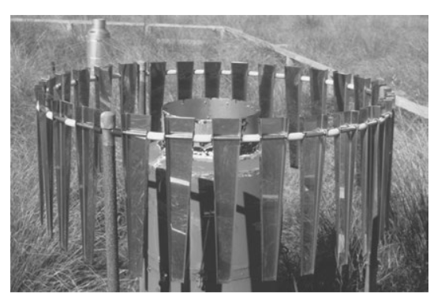
Rain measurement in Australia
No universal “perfect” design.
The best gauge depends on:
- Local conditions (e.g. snow, wind exposure)
- Practical installation needs
The non-splash grid + surface-level gauge is closest to ideal:
- Reduces splash and turbulence
- Unsuitable for snow-prone areas (risk of burial)
The standard rain gauge in Australia is a 203 mm manual gauge, which collects rainfall into a graduated cylinder.
It is mounted 0.3 m above the ground, away from obstructions.
Modern stations use Tipping Bucket Rain Gauges (TBRG):
- Each tip = 0.2 mm of rain
- Measures rainfall intensity and rate
- Snow gauges are used in alpine areas with melt tanks or antifreeze methods.
- Readings are mostly taken at 9am daily, often by volunteers.
- Rainfall is recorded to the nearest 0.2 mm or 0.1 mm in recent years.
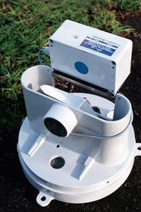
Challenges of Measuring Snowfall
- Snow measurement faces greater errors than rainfall:
- Snowflakes are easily transported by wind before and after settling.
- Leads to drifting and uneven surface distribution.
- Raindrops, by contrast, rarely redistribute after hitting the ground.
- Measurement errors resemble rain splash but more extreme.
Two main approaches:
- Snow gauges (modified rain gauges)
- Ground snow depth measurements
Both suffer from:
- Wind transport and drift
- Uneven accumulation
- Sampling errors (point measurements ≠ area representation)
Rain Gauge Modification for Snow
Modifications needed to measure snow with a rain gauge:
- Heated rim melts falling snow into water
- Prevents snow buildup and overflow
- Requires power supply — impractical in remote areas
- Drainage system must move water away from heat source
- Prevents evaporation losses
- Raised gauge keeps instrument above snow surface
- Increases turbulence error
- Typically paired with wind shields or deflectors
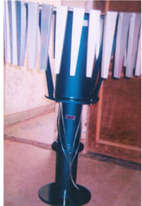
Measuring Snow Depth: Core Sampling
- Core sampler:
- Extracts a vertical column, measures depth and density
- Snow is then melted to determine water equivalent depth
- Limitations:
- Point-based, non-continuous measurementm; location-dependent: snow drift and exposure affect accuracy
- Similar in limitation to daily manual rain measurements
- Snow pillows measure accumulated snow mass
- Capture snowpack water storage, not just depth
- Used in hydrology for estimating delayed runoff
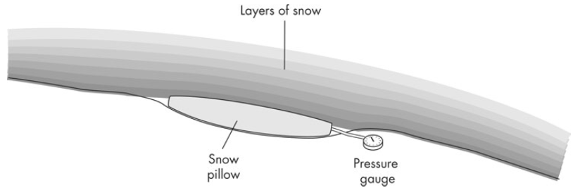
From point measurements to spatial rainfall estimation
- Rain gauges provide rainfall data at specific points.
- Hydrologists, however, need to know rainfall over a whole catchment.
- This requires converting point data into areal estimates using spatial averaging techniques.
- Factors influencing rainfall distribution:
- Gauge density and placement
- Topography (e.g. elevation, slope)
- In practice, we apply methods to estimate catchment-wide rainfall from gauge networks.
- These methods will be covered in the tutorials.
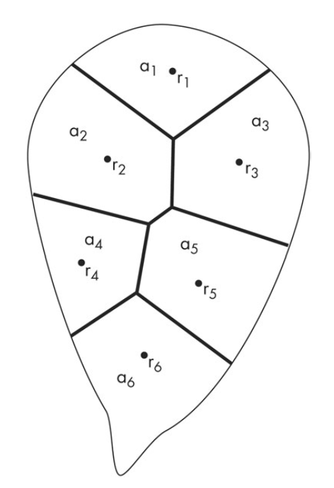
Thiessen Polygons
- American hydrologist Thiessen developed a method to overcome uneven distribution of rainfall gauges.
- Attach an area to each gauge. Every point in the area is closer to that gauge than any other gauge.
- Connect each gauge to its nearest neighbours.
- Find the perpendicular bisector of the line segment connecting the two gauges.
- Extend the bisectors until they meet.
- Find the area associated with each gauge.
- Then:
R = \sum_{i=1}^{n} r_i \times \left(\frac{a_i}{A}\right) whereR is the areal rainfall,r_i is the rainfall at thei -th gauge,a_i is the area of thei -th polygon, andA is the total area of the catchment.
Hypsometric method
- It is well known that the altitude of the catchment (among other factors) affects the rainfall.
- Here we change the polygons into a hypsometric curves.
- That is we are assuming points with unknown rain measurements should have the same rainfall as the points with known rainfall at the same altitude.
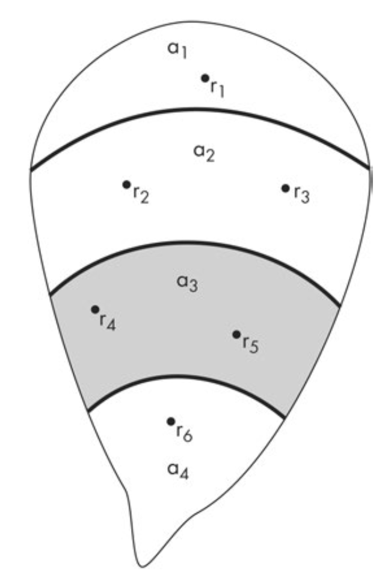
Isohyetal method
- Isohyetal method is a way to estimate the areal rainfall from the altitude of the catchment.
- It is a way to estimate the areal rainfall from the altitude of the catchment.
- With the advent of computing, these techniques have improved a lot.
- e.g., kriging!
Same figure as before, but imagine you draw contour lines of the rainfall distribution from before
Summary:
Precipitation: Formation, Measurement, and Spatial Estimation
We covered the role of precipitation in the hydrological cycle, its formation mechanisms, and factors affecting its distribution.
- Conditions for precipitation: atmospheric cooling, condensation nuclei, and droplet growth.
- Cooling mechanisms: adiabatic processes, convective/orographic/cyclonic uplift.
- Growth processes: condensation, coalescence, and the Bergeron process.
- Distribution influences:
- Static: altitude, aspect, slope.
- Dynamic: storm tracks, frontal systems, moisture availability.
- Measurement techniques:
- Rain and snow gauges, tipping bucket systems.
- Common errors: evaporation, wetting, splash, and wind turbulence.
- Snowfall challenges: redistribution by wind, point measurement issues, gauge modifications.
- Spatial estimation: need to translate point rainfall data into catchment-scale estimates using methods influenced by gauge placement and terrain.